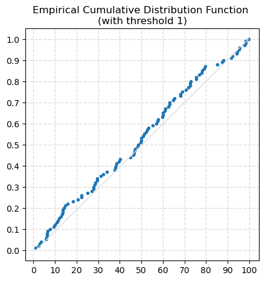
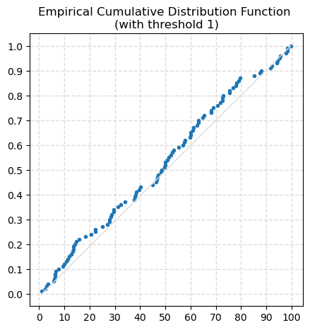
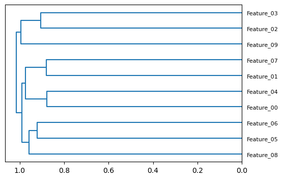

df = pd.DataFrame(data={'a': np.random.random(100) * 100,'b': np.random.random(100) * 50,'c': np.random.random(100)})
data_1, freq_1, last_idx_1 = ecdf(data=df.a, threshold=1, figsize=(5, 5))
eda_stats_utilsecdf (data:pandas.core.series.Series|numpy.ndarray, threshold:Optional[int]=None, figsize:Optional[tuple[int,int]]=None)
Compute Empirical Cumulative Distribution Function (ECDF), plot it and returns values.
| Type | Default | Details | |
|---|---|---|---|
| data | pd.Series | np.ndarray | data to analyse | |
| threshold | Optional[int] | None | cummulative frequency used as threshold. Must be between 0 and 1 |
| figsize | Optional[tuple[int, int]] | None | figure size (width, height) |
| Returns | tuple[np.array, np.array, int] | sorted data (ascending), cumulative frequencies, last index |
ecdf plots the empirical cumulative distribution function (ECDF), for data cumulative frequencies from 0 to threshold <= 1.
The empirical cumulative distribution function (ECDF) is a step function that jumps up by 1/n at each of the n data points in the dataset. Its value at any specified value of the measured variable is the fraction of observations of the measured variable that are less than or equal to the specified value.
The ECDF is an estimate of the cumulative distribution function that generated the points in the sample. It allows to compare with the distribution that is expected.
df = pd.DataFrame(data={'a': np.random.random(100) * 100,'b': np.random.random(100) * 50,'c': np.random.random(100)})
data_1, freq_1, last_idx_1 = ecdf(data=df.a, threshold=1, figsize=(5, 5))
The ecdf function also returns: - the data used for the ECDF, with values sorted from smallest to largest - the respective cummulative frequencies - the index of data value/frequency plotted (at the threshold)
array([ 0.85, 2.1 , 2.44, 3.22, 3.24, 3.9 , 4.65, 5.53, 6.08, 6.34, 6.84, 6.98, 8.37, 9.09, 12.58, 12.96,
13.62, 14.5 , 15.06, 17.11, 17.52, 17.99, 19.12, 22.3 , 22.45, 23.87, 23.87, 24.15, 24.28, 25.95, 26.79, 30.31,
30.4 , 34.83, 38.01, 38.56, 38.62, 39.47, 39.58, 41.1 , 42.43, 43.57, 43.73, 45.92, 47.19, 47.66, 48.52, 49.03,
49.6 , 49.98, 51.07, 52.14, 53.06, 53.92, 54.66, 55.88, 56.12, 56.29, 56.52, 57.02, 57.63, 58.54, 59.37, 62.65,
62.91, 62.93, 63.22, 64.12, 64.82, 65.06, 65.35, 67.16, 70.6 , 70.94, 72.24, 72.45, 73.87, 74.91, 78.44, 79.17,
79.78, 79.82, 82.53, 84.96, 85.14, 85.43, 86.19, 86.35, 88.31, 89.76, 90.42, 91.69, 93.11, 96.71, 97.38, 98.32,
98.33, 98.37, 98.56, 98.83])array([0.01, 0.02, 0.03, 0.04, 0.05, 0.06, 0.07, 0.08, 0.09, 0.1 , 0.11, 0.12, 0.13, 0.14, 0.15, 0.16, 0.17, 0.18,
0.19, 0.2 , 0.21, 0.22, 0.23, 0.24, 0.25, 0.26, 0.27, 0.28, 0.29, 0.3 , 0.31, 0.32, 0.33, 0.34, 0.35, 0.36,
0.37, 0.38, 0.39, 0.4 , 0.41, 0.42, 0.43, 0.44, 0.45, 0.46, 0.47, 0.48, 0.49, 0.5 , 0.51, 0.52, 0.53, 0.54,
0.55, 0.56, 0.57, 0.58, 0.59, 0.6 , 0.61, 0.62, 0.63, 0.64, 0.65, 0.66, 0.67, 0.68, 0.69, 0.7 , 0.71, 0.72,
0.73, 0.74, 0.75, 0.76, 0.77, 0.78, 0.79, 0.8 , 0.81, 0.82, 0.83, 0.84, 0.85, 0.86, 0.87, 0.88, 0.89, 0.9 ,
0.91, 0.92, 0.93, 0.94, 0.95, 0.96, 0.97, 0.98, 0.99, 1. ])The function returns all the sorted data and frequencies, independently from the threshold. In the example above, data_1 and data_2 have the same values.
array([ 0.85, 2.1 , 2.44, 3.22, 3.24, 3.9 , 4.65, 5.53, 6.08, 6.34, 6.84, 6.98, 8.37, 9.09, 12.58, 12.96,
13.62, 14.5 , 15.06, 17.11, 17.52, 17.99, 19.12, 22.3 , 22.45, 23.87, 23.87, 24.15, 24.28, 25.95, 26.79, 30.31,
30.4 , 34.83, 38.01, 38.56, 38.62, 39.47, 39.58, 41.1 , 42.43, 43.57, 43.73, 45.92, 47.19, 47.66, 48.52, 49.03,
49.6 , 49.98, 51.07, 52.14, 53.06, 53.92, 54.66, 55.88, 56.12, 56.29, 56.52, 57.02, 57.63, 58.54, 59.37, 62.65,
62.91, 62.93, 63.22, 64.12, 64.82, 65.06, 65.35, 67.16, 70.6 , 70.94, 72.24])Plot dendogram based on Dataframe’s columns’ spearman correlation coefficients
This function was first seen on fastai repo
feats = [f"Feature_{i:02d}" for i in range(10)]
print('Features:')
print(', '.join(feats))
X = pd.DataFrame(np.random.normal(size=(500, 10)), columns=feats)
cluster_columns(X, (6, 4), 8)Features:
Feature_00, Feature_01, Feature_02, Feature_03, Feature_04, Feature_05, Feature_06, Feature_07, Feature_08, Feature_09